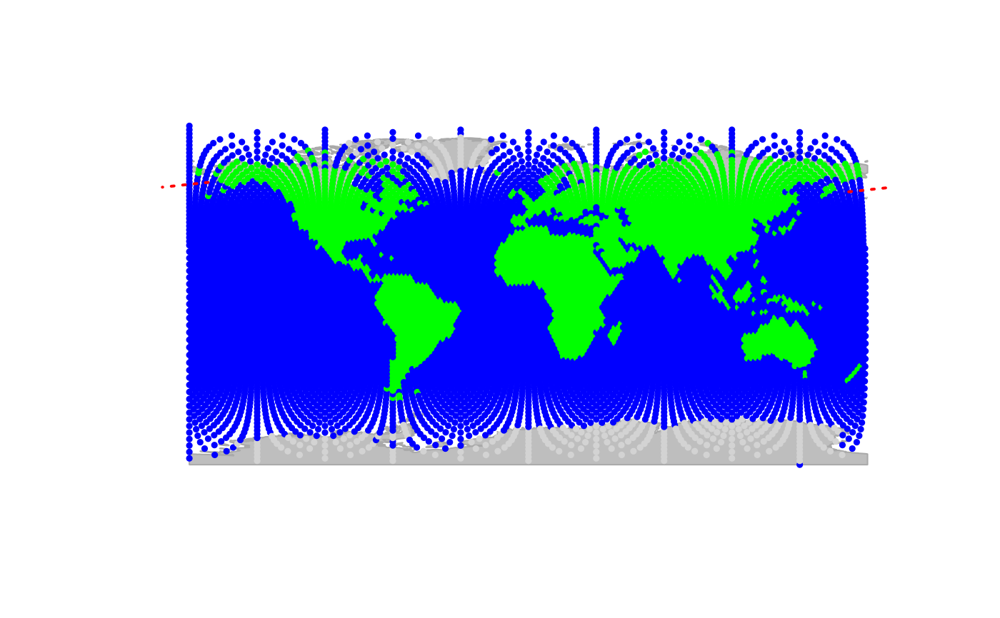

A substitute to segments which correctly draws
segments between locations distant by more than 90 degrees of longitude
(i.e. from one hemisphere to the other). It is used instead of segments, but
it is slower.
Arguments
- x0, y0
coordinates of points from which to draw.
- x1, y1
coordinates of points to which to draw.
- col
a character string or an integer indicating the color of the segments.
- lty
a character string or an integer indicating the type of line.
- lwd
an integer indicating the line width.
- ...
further graphical parameters (from 'par') passed to the
segmentsfunction.
Details
This low-level function is designed to be called by other procedures of
geoGraph. However, it can sometimes be useful by itself. Note that
unlike other functions in geoGraph, this functions does not
test for the validity of the provided arguments (for speed purposes).
Examples
plot(worldgraph.10k, reset = TRUE)
geo.segments(x0 = -170, y0 = 60, x1 = 170, y1 = 55, col = "red", lwd = 2)
